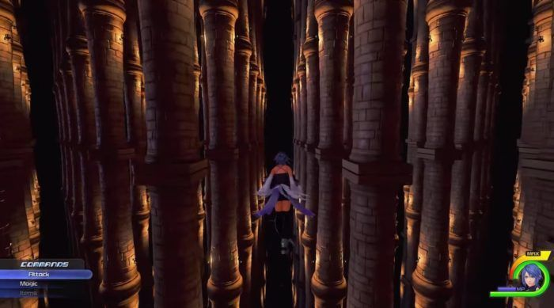

Straight from Tokyo Game Show is a new trailer for the upcoming Kingdom Hearts 2.8 Final Chapter Prologue, which features a good look at Aqua’s story within the HD compilation.
The newest trailer for Kingdom Hearts 2.8 Final Chapter Prologue just dropped that shows just how gorgeous a Kingdom Hearts game can look in high definition. While the trailer covers all of the stories presented in collection, the meat of the trailer is focused on the character Aqua, who has been MIA since the events of Birth By Sleep.
Luckily for fans that don’t know a lick of Japanese, the trailer is presented in English, and that includes character dialogue. This doesn’t mean anything they say makes a whole lot of sense given the nature of trailers and the Kingdom Hearts series as a whole – which is charmingly convoluted – but it helps get an idea of what is happening.
Kingdom Hearts 2.8 Final Chapter Prologue, like the HD collections that came before, includes games from the series as well as a short movie. Previously, these movies were merely retellings of previous games that Square Enix didn’t bother releasing as playable experiences again. Instead, they are spruced up with some high definition wizardry and edited together to form a sort of “movie”. This compilation’s footage, however, is original and it tells the story of the Foretellers, which predates the story featured in the main Kingdom Hearts series of games by a bit. Kingdom Hearts Back Cover x should be interesting, allowing players to see what came first and how it all began. It also ties into the Kingdom Hearts Unchained x mobile game.
The rest of collection includes a full remastered Dream Drop Distance and (deep breath) Kingdom Hearts 0.2 Birth by Sleep – a fragmentary passage -, which is the new adventure starring Aqua from the original Birth By Sleep.
In the trailer, viewers follow Aqua through some very trippy worlds as she battles her inner darkness with a little help from her friends – including Mickey Mouse himself. While the story is meant to help bridge the gap between the upcoming Kingdom Hearts 3 and the game before, it seems more like an extensive tech demo that shows off what is graphically possible for the third and final chapter of the series. That isn’t to say it won’t be enjoyable. It features the same gameplay as Kingdom Hearts 3, which is nice, but it won’t be overly long and it’s hard to imagine it having a lot of replay value.
The trailer is definitely worth a viewing for fans of the series; it does give some insight into what they will be experiencing with the collection. The Back Cover x movie will allow for the origins of the the series to be expanded upon and the remaster of Dream Drop Distance is an opportunity for those without a 3DS to experience it for the first time, while offering something new for anyone wanting to play it all over again.
Aqua’s tale is likely what most fans are anxiously awaiting though – if for nothing else than to see what happened to the character and how that story ties into the series’ finale. This trailer will help them get their fill until this game is released next year. Plus, the whole thing is accompanied by yet another remix of the song “Simple and Clean” by Utada Hikaru; there can never be too many.
Kingdom Hearts HD 2.8 Final Chapter Prologue will release January 24, 2017 on PlayStation 4.